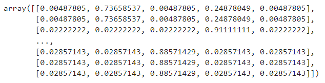
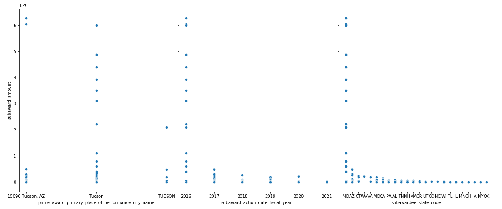

// Scholarship Competition - Mini Project
Award of USAspending
Netid: sy671

// Scholarship Competition - Mini Project
Award of USAspending
Netid: sy671
// Scholarship Competition - Mini Project
Netid: sy671
// Scholarship Competition - Mini Project
Netid: sy671
The Federal Response to COVID-19 (trillion)
FY 2022 Obligation Amount (trillion)
Department of Health and Human Services (trillion)
Department of Defense
(trillion)
// Introduction
USAspending.gov is the official source of US government spending data. Its mission is to show the American public what the federal government spends each year and how it spends it. You can range from congressional appropriations to federal agencies to local communities and businesses.
From the four data shown above, we can also have a certain understanding of the US finance and the website USAspending, and the Ministry of Defense corresponding to the fourth number is one of the objects of this study. The data refers to a Department of Defense(DOD) grant to Raytheon COMPANY for its Hypersonic Air-breathing Weapon Concept (HAWC) program.
// Data Cleaning
After importing the data, we need to have an overview of the overall structure and samples of the data, for example, the size of the data, how many columns there are, what format each column is in, whether it contains null, etc.
Then we observe the duplicate values, and we can see that a large number of columns in the data have duplicate values. Among them, 'prime_award_unique_key' refers to the unique and unique reward key, and this data set corresponds to only one key, which is "CONT_AWD_HR001117C0025_9700_-NONE-_-NONE-"; piid in 'prime_award_piid' refers to the Procurement Instrument Identifier, in this data There is only one variable corresponding to "HR001117C0025", which corresponds to the Hypersonic Air-breathing Weapon Concept (HAWC) that I mentioned in the intro section. An explanation of the variables can be found in Data Dictionary | USAspending.
Then. I view the type of each column and classify and then get the numeric variable, and get the statistical characteristics of each column of data (eg: the total number of rows, the mean, standard deviation of the column data, etc.)
// Visualization
The variable subawardee_highly_compensated_officer_1_name is the name of the individual identified as one of the five highest paid "executives". "Administrator" means an officer, managing partner or any other employee who holds a management position for a sub-recipient.
Similarly, the meaning of the variable subawardee_highly_compensated_officer_3_name can be obtained.
The next two decibel graphs show the number of subawardees and the total amount of subawardees handled by two of the five executives.
Since there are many blank items in the executive variables, the exploration of these variables will inevitably have errors.
You can check out my code which also shows the relationship of officers 4 and 5 to the subawardees amount sum. From this, we can indirectly see the working ability of the officers.
// Correlation analysis
Here we deepen our understanding of the dataset by performing correlation analysis on numerical variables. But here we can see that bianlangzhong contains dun and zip code. According to Berkeley stat "Some variables, such as social security numbers and zip codes, take numerical values, but are not quantitative: they are qualitative or categorical variables. The sum of two zip codes or social security numbers is meaningless. The average of a list of zip codes is not meaningful. The value doesn't make sense." So we can just study the correlation between year, month and amount.
// Interactive visualization and Sanky
You can check out the interactive visualizations in my code, they mainly show the relationship between various variables and subaward_amount for better follow-up research.
And the following Sankey diagram is the data flow I found in this dataset. You can also click the link to view it because the image size is too large to display completely.
// Network analysis
From the data, we know that prime_award_awarding_agency_name refers to the Department of Defense. Now let's find the network relationship of the following variables: prime_award_awarding_sub_agency_name, prime_award_awarding_office_name, prime_award_funding_agency_name, prime_award_funding_sub_agency_name, prime_award_funding_office_name, prime_award_project_title.
And the relationship between the Raytheon company corresponding to prime_awardee_name and the following variables: prime_awardee_business_types, subawardee_name, subawardee_parent_name, subawardee_business_types, subaward_description.
Considering that there are too many variables, I did not combine prime_award_awarding_agency_name and prime_awardee_name for analysis. But from the following two figures, the network of the two can already be found.
// Natural language processing
At the beginning of NLP, I first process the stop words using a list of stop words. Stop words include "I", "is", "are", "one", etc. I found common stop words in English here to remove as much noise as possible before NLP and sentiment analysis.
TF-IDF which is Term Frequency - Inverse Document Frequency, calculates the importance of the feature word in the entire corpus according to the number of occurrences of the feature word in the text and the document frequency in the entire corpus. The advantage is that it can filter out some For common but irrelevant words, keep as many feature words as possible with a high degree of influence.
Finally, we can get the word cloud according to TF-IDF, the most conspicuous of which are Device, Missile, Assy which is the meaning of assembly. Explain that the item is mechanistically related and agrees with what we know.
Document topic generation model (Latent Dirichlet Allocation, LDA for short). The specific implementation steps of the LDA model are as follows:
1. A topic z corresponding to each word is extracted from the multinomial distribution θ corresponding to each webpage D.
2. Draw a word w from the multinomial distribution φ corresponding to topic z.
3.Steps 1 and 2 are repeated for a total of Nd times until each word in the web page is traversed.
First I read the corpus and convert the words in the text into a word frequency matrix. Then count the number of occurrences of each word to obtain all text keywords in the word bag. Finally I build a word frequency matrix to see the word frequency results. Then we can get that the number of features is 130.
Find Topic-Word Distribution:
*Topic 0
- other nre custom batteries cca
*Topic 1
- nre assys structural gen engineering
*Topic 2
- fixed price firm time material
*Topic 3
- plus cost fixed fee non
*Topic 4
- nre other cableassy harnmulti devices
// Machine Learning
Importance Analysis

Use pandas' concat function to simply fuse the data according to different axes and get the corresponding corr.
Predicting subaward_amount by linear regression gives MAE(Mean Absolute Error): 5266788.284251619. And observe the following two figures, which are the comparison chart of prediction and actual and the fitting chart of linear regression. It can be seen that the accuracy of the model is low. The amount of data is the basis of machine learning. If the amount of data is too small, such as this dataset, it is difficult to achieve a good training effect.
// Conclusion
There are 4 steps of this mini-project: exploratory data analysis, network analysis, natural language processing, and machine learning. In the first two parts I explored what the different variables mean and how they relate and correlate with each other. In the NLP part, I performed three steps: TF-IDF calculation, LDA document topic distribution processing and Top-N of topic keywords. In the final machine learning part, I used a linear regression model to predict subaward_amount. Although the model accuracy was low, this was expected in advance.
In future plans for this research, I will collect more data, such as all awards between Raytheon and the Department of Defense. Then I will try NLP and ML again and make predictions for NLP results in the ML part. Not only that, but I also try to use classifiers and other regression models even neural models to train and analyze.
Finally, thank you for watching and reading.